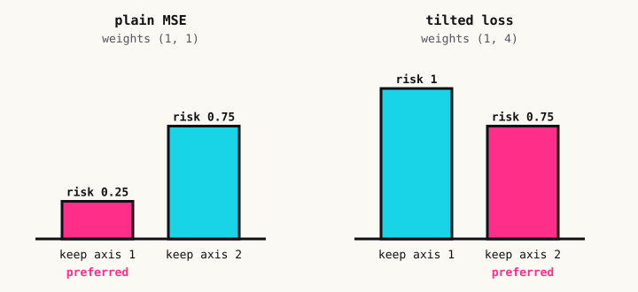
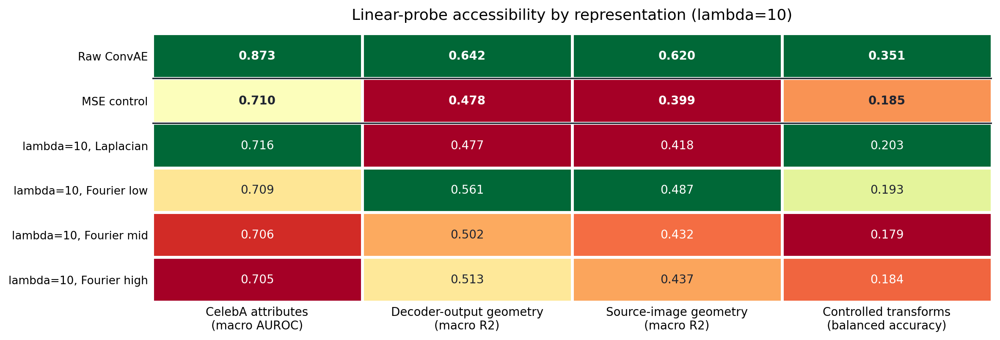
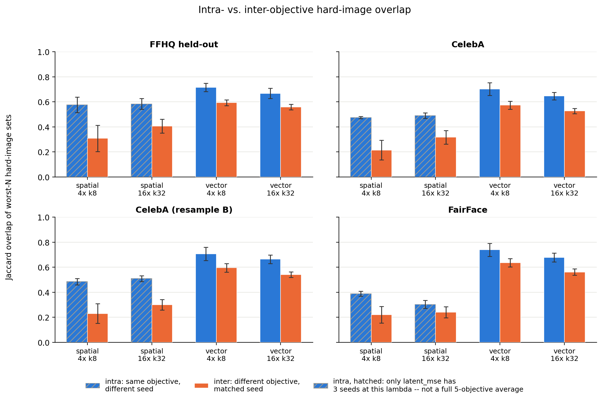
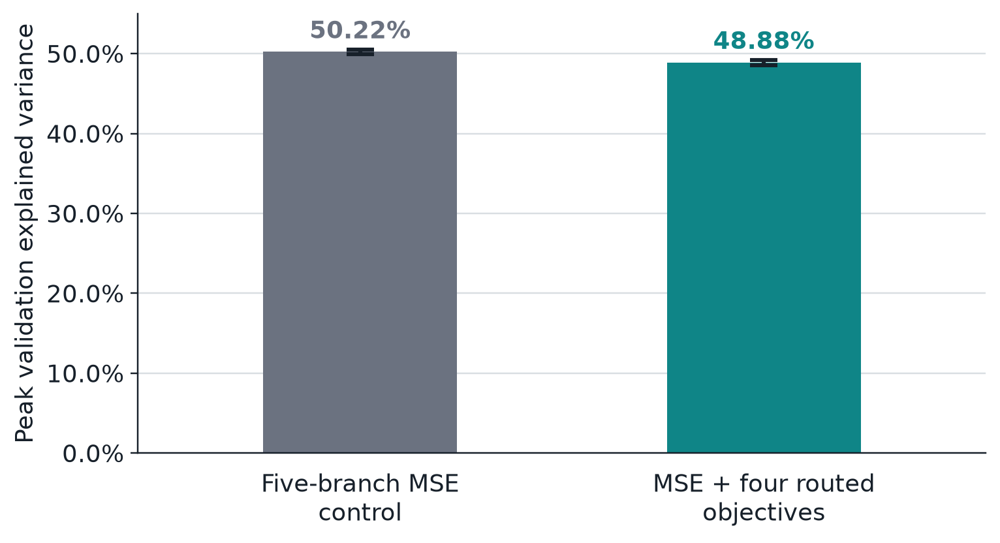

Sparse autoencoders you can steer
A sparse autoencoder (SAE) is the standard tool for asking a network what it has represented. You take a layer's activations, train a small model to reconstruct them using only a few active units at a time, and treat the learned directions as a dictionary, a vocabulary of features you can name, read off, and edit. Interpretability work leans on that dictionary. This project is about how much it should.
The dictionary isn't determined by the data
Train two SAEs on identical data with the same objective, change only the random seed, and you can get dictionaries that disagree a lot. Earlier work found as little as 30% feature overlap for TopK SAEs trained on a language model. Which features you end up with depends on things like initialization that have nothing to do with the data.
That is a strange foundation for explaining a model. And the reason it happens is simple: every standard SAE objective says "reconstruct well under a sparsity budget" and nothing else. When more than one dictionary reconstructs equally well, the objective has no preference between them, so the optimizer settles on whichever one it stumbles into.
We asked whether we could give it a preference.
The idea: tilt the loss
If you weight one geometric property of the reconstruction error more heavily, such as an edge detector or a frequency band, then features that live along that geometry become more valuable to keep. So we add a transform of the error on top of ordinary reconstruction:
We tried four transforms for image-like latents: a Laplacian, which rewards local edge content and is near zero in smooth regions, and three disjoint Fourier-magnitude bands (low, mid, high), each rewarding structure at a different spatial scale. If you want an SAE to care about fine detail you reach for the high band; for coarse structure you reach for the low one. The transform is the lever.
Why this isn't a hack
I wanted a reason to believe this wasn't just an arbitrary penalty that happens to move things around, so we worked out a tiny model where you can prove what happens. Take a residual with two directions and a dictionary with room for only one. Suppose direction 1 shows up 75% of the time.

That's the first result: geometry can reverse which dictionary is preferred. The second matters just as much: with the plain MSE term kept as an anchor, the tilted loss accepts exactly the same perfect reconstructions as MSE does. It gives up nothing a plain SAE could represent. And the anchor is necessary: without it, a transform with a nontrivial nullspace can call a bad reconstruction perfect, which is why every objective in the paper keeps the MSE term.
Does it work on real SAEs?
The toy model says the lever exists. We tested it on trained SAEs: TopK SAEs on the 512-dimensional latent space of a convolutional autoencoder trained on face images, with matched architectures (vector and spatial layouts at two sizes), the five objectives (a plain MSE control, the Laplacian, and three Fourier bands), and the only thing varying within each setting being the SAE's random seed.
The vocabularies really differ
If the objective didn't matter, the dictionaries from different objectives would be no more different from each other than the dictionaries from different seeds. They are. We checked this at three levels:
- Whole-image level: projecting each held-out image's reconstruction residual into the shared latent space and embedding it without any labels separates cleanly by training objective, and colouring the same points by seed or by reconstruction quality shows nothing.
- Feature level: a linear discriminant analysis on single features' causal contributions orders the five objectives from MSE and low-frequency to Laplacian and high-frequency, with about 64% five-way held-out accuracy against 20% chance.
- Direct comparison: four independent dictionary-similarity metrics (decoder cosine, activation CKA, per-feature activation correlation, and atom recurrence) agree that same-objective SAEs are more similar to each other than different-objective ones, even at matched seeds.
Without paying for it in reconstruction
The usual worry about an extra term in the loss is that it makes the model worse at its main job. Held-out explained variance stays close to the MSE control, around 49 to 54%, and training stays stable across every transform and every strength we tried: a stronger transformed term trains to a lower loss plateau instead of diverging.
What the different vocabularies are for
Different isn't the same as useful. Three tests ask whether tilting the geometry buys targeted search.
1. Readability of downstream tasks. We trained linear probes on each SAE's features to read out four things: CelebA attributes, decoder-output geometry, source-image geometry, and controlled image transforms.

2. Recovering a planted signal. We planted twenty known visual effects (a checkerboard, a colour tint, a local blob, and so on) into images and asked which SAEs recover them. The ones whose objective matches an effect's geometry recover it better. The absolute numbers are small, because planted signals are out of distribution by construction, but the ranking across objectives is consistent.
3. Predicting where the model fails. If you're auditing a deployed model you often only see its outputs, not its dictionary. So we compared SAEs by which held-out images each reconstructs worst, which needs no correspondence between features. Two SAEs trained on the same objective agree on which images are hard more than two SAEs trained on different objectives do, and that holds on four independent probe datasets, including faces the autoencoder never saw.

All four in one model
If different objectives specialize, can you have the specializations in a single SAE? We built a five-branch model with one reconstruction-focused branch and four branches routed to the four transformed objectives.

Where I'd be careful
This is TopK SAEs on a single convolutional autoencoder, trained on faces. Language models are where most of the field's tooling lives, and I haven't tested them: our transforms are image-specific and would need a different analogue there. I also haven't tried a production-scale model or a different backbone. The failure-mode result is correlational: the objective predicts which images an SAE struggles with, not why. And we picked the four transforms by hand, from prior knowledge of what matters for faces. In a setting where you don't already know the right geometry, you would need a way to choose or learn the transform.
Why I like it
Interpretability usually treats an SAE's dictionary as a fixed by-product of whatever seed and hyperparameters happened to be used. This project treats the training objective as a lever, as controllable as dictionary size or sparsity, for choosing which of many equally good vocabularies you want to look through. If it holds up beyond faces, it turns "which features did we get?" from a matter of seed luck into something closer to a search you can aim.
If you'd like to poke at real activations yourself, the interpretability explorer lets you click through attention and the logit lens inside a real transformer.
The paper is with Ilona Demler and Pietro Perona, and is under review at CVPR 2027.